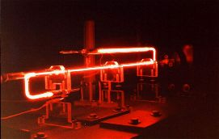
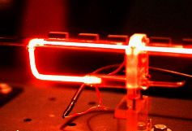
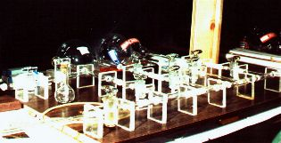
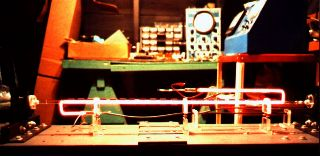
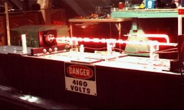
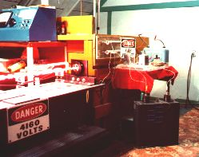
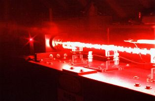

Construction
and Operation of a One-Meter Helium Neon Laser
Copyright 2001 - J&K Laser Productions
(All Pictures are hyper-linked to larger images.))
This is a technical paper written for a Laser Physics Class (Physics 470K) at Purdue University Calumet. At the time this paper was written, (the early 1980's), building a large HeNe laser tube was still more economically feasible as compared to purchasing a laser of this size. These days with the large surplus market of HeNe tubes, building a HeNe laser certainly is not a positive economic undertaking, but may provide a unique educational experience and a lesson in perseverance.
Building a HeNe Laser? - Think Carefully: Lots of Fun, but More Work Than Expected
Few devices in the physics laboratory present a more deceptive appearance than the He-Ne laser.(1) The apparatus seems to consist merely of a long neon sign tube with a pair of windows cemented at each end along with two external parallel mirrors mounted outside the laser cavity. However, actual construction of the He-Ne laser requires a wide diversity of skill in glass blowing, fabricating small parts, and operating a moderately high vacuum system. Initially the project was expected to be completed within a few weekends of work, but instead took over six months to finally construct an operating laser. Most of the earlier tubes built were just glorified neon discharge tubes as they did not undergo laser oscillation.

The discharge
electrodes were commercially made neon sign electrodes, thereby
eliminating the need to make homemade vacuum tight glass to metal
seals.
Using a 80 cm long by 12 mm diameter glass tube, side arms 10 cm long, were attached at each end of the main tube. Electrodes were attached to the ends of each sidearm and then the sidearms were bent back parallel to the main laser tube. Each end of the main laser tube was cut at a Brewster angle of 32.8 degrees with respect to the laser tube axis. The cutting was performed by using a dull hacksaw blade and a wet slurry of sand abrasive. This took about l~2 hour for each cut. After the hacksaw cutting, the Brewster ends were ground with #600 grit sand paper to make the ends flat and vacuum tight. (3)

Brewster Windows or Internal Mirrors - Which is best?
The original tube as described in this report used Brewster windows. A second tube was made with internal mirrors. Brewster windows give the advantage of changing mirrors and permit much easier mirror mounting and alignment as shown in the pictures. Internal mirrors don't have the small losses from windows, but require almost perfect alignment at the time of tube manufacturer. Afterwards, the tube can be slightly bent to align the mirrors. Pictures of both laser tubes are seen in this html report.
Commercially made Brewster windows were then cemented on with Torr-Seal(tm) vacuum epoxy. Originally, household epoxy glue (not one of my better ideas!) was used, but was later found to have an appreciable vapor pressure which contaminated the He-Ne gas mixture. After the windows were cemented on using the proper epoxy glue, the laser tube was ready for vacuum pumpdown.
Since the laser involved here operates with a gas pressure in the 1-5 torr range, a vacuum pumping system had to be built. At first refrigerator compressors were used as vacuum pumps, but only a base pressures of 10-20 torr could be reached. Thus, a surplus Sargent-Welch vacuum pump was obtained that gave a base pressure of <1.0 millitorr.
Processing and Filling the Tube with He and Ne:
To reach of vacuum of <1.0 millitorr in a laser tube was a difficult task. When the tube was connected to the vacuum system and pumped out the pressure gauge did indeed indicate a pressure about 10 millitorr. Further pumping produced little reduction in pressure. At this point it was decided to add a He-Ne gas mixture to the tube to bring up the pressure to 3.0 torr. However, after an electrical discharge was applied across the tube the glow was not the characteristic pink color of a He-Ne laser, but was bright blue in color. The temperature of the tube wall also became quite hot. Subsequent examination of the discharge spectra by a diffraction grating showed the presence of N2 and O2 gas impurities, presumably liberated from the walls of the glass tube and metal electrodes.
To remove N2 and O2
gas impurities that had leached from the electrodes and the tube
wall, the technique of ion bombardment was used. (4)
This involved pumping the laser tube down to a pressure of 1.0
torr and then applying a 10 KV, 500 mA AC electrical discharge
across the tube. With high power applied the electrodes were
heated by direct ion bombardment until they glowed bright red.
The discharge also heated the tube wall to a temperature of
approximately 150-200C. This caused N2 and O2
gas impurities to be released and be carried away by the vacuum
system. After the tube had cooled and the pressure reduced to
less than 1.0 millitorr, a 10:1 He-Ne mixture was pumped into the
tube and brought up to a pressure of 3.0 torr.

The ion bombardment technique was not without its drawbacks. High temperature also ruined the internal plasma tube. The original plasma tube was also made from soft lead glass and during bombardment became hot enough to soften and sag. Hence, the optically straight path through the internal tube was blocked. To eliminate this problem the main laser tube was re-opened and a high temperature Pyrex glass internal tube was sealed in the main laser tube. The Pyrex glass tube then survived the subsequent heating of ion bombardment.
To determine the amount of He-Ne gas needed for efficient laser operation was another difficult problem. Using a very simple approach it would seem that the more Ne gas present, the more power the laser would have. Unfortunately this is not the case with the He-Ne laser. The last transition an excited Ne atom makes is from the 3s state to the ground state. Since this is a forbidden transition, some other non-radiative mechanism must employed to depopulate the 3s level. With the laser used here the internal plasma tube serves to absorb energy from the 3s level in the form of heat. Thus, the mean free path of a Ne atom becomes very important. With a higher pressure of Ne atoms the mean free path becomes short, hence a greater time is taken for an excited Ne atom in the 3s state to collide with the internal tube wall. Lowering the Ne pressure increases the mean free path, thus reducing the time interval for a Ne atom to reach the wall of the internal tube

To minimize sputtering in the He-Ne laser tube, the total gas pressure is increased to the 2-3 torr range. While this does sacrifice the power output somewhat, the overall tube life is greatly increased. Tube life is also extended by increasing the surface area the cathode, thereby minimizing heating effects due to ion bombardment.
The H-Beam Optical Bench:

Alignment of the mirrors was achieved by first aligning the high reflector mirror parallel to a small Metrologic He-Ne laser outside the laser cavity. Then the output mirror was also aligned parallel to the Metrologic laser. It was interesting to note that when the laser tube was first turned on, no laser oscillation occurred. Only after some slight adjustment of the mirror positioning set screws was laser oscillation finally achieved. To increase the power output the high reflector mirror was moved downward to compensate for the lateral beam displacement caused by the Brewster windows. Later on, the mounting system holding the laser tube was redesigned to provide for both adjustable vertical and horizontal movement. This allowed for exactly aligning the laser tube along the optical axis between the two mirrors.
Another problem that reduced the laser output was dust on the inside of the Brewster windows. Prior to cementing the Brewster windows on the laser tube, the windows were immaculately cleaned. However, when the laser tube was operating a layer of dust could be seen on the inner surface of the windows. Later on, the cause of the dust contamination was found. When the laser tube was ready to be pumped down a glass to glass tube-seal was made between the laser tube and the vacuum inlet. To keep the glass seal from collapsing, air was blown in. Unfortunately this air wasn’t filtered and thus blew dust into the laser tube and consequently onto the inner surfaces of the Brewster windows. At this point it was impossible to clean the windows without breaking the tube seal.
As a consequence of the scattering at the Brewster windows the laser output was diminished. Measurement of the output was less than 5 mW, while for commercially built one-meter lasers have power outputs typically above 50 mW.
No Frills, but Super Heavy Duty Power Supply:

The best operating voltage occurred at minimum driving current
and voltage - almost at the point were the tube would wink out.
Higher driving voltages and current would cause the tube to glow
much brighter, but laser oscillation would diminish and
eventually stop at high currents. (6)
(Note the large 1.0 uF, 20KV HV capacitor in the lower right. This was a simple "brute force" power supply made from a neon sign transformer, a full-wave set of microwave HV rectifiers, and lots of jumper clips to connect everything together. The ballast resistors are the big 100W green cylinders. These days there are much better and safer power supplies...)
Still More Power Wanted!

As a consequence the bandwidth of the 3.39 um transition is increased, thus reducing its gain. This greatly increases the power output of the 0.63 um wavelength. With the laser discussed here forty small magnets were placed along the laser tube axis. This resulted in a power increase of another 50 %. With, these improvements the power output was about 12mw multi-mode, which is not too bad for a homemade laser tube. Isotopic grades of He and Ne would further increase power outputs, but these type of gases were not obtainable.
During the laser’s operation it was noted how exceptionally sensitive the optical cavity was susceptible to slight movements. The steel mirror mounts, made from 6 x 6 in. steel plates, 0.375 inch thick, could be bent enough by hand to stop the laser oscillation.
The Laser In Action:
Another interesting aspect of the laser output was the high degree of polarization of the beam. Sending the beam into a polarizing filter at a right angle to the laser beam's polarization, completely blocked the light output at the exit of the polarizer. The laser output, depending upon how the mirrors were adjusted, showed a multi-mode structure. An attempt to operate the laser in a single mode by using one curved mirror and one flat mirror, did not succeed. In theory this should have worked, but possibly the losses due to dust inside the Brewster windows may have prevented oscillation.
The tube described in this report was operated periodically for
over five years before it finally succumbed to sputtering effects
and water vapor contamination from the epoxy seals. After this
period of time, surplus prices of HeNe laser tubes dropped to a
point were it was more practical to buy a ready-made unit. Of
course, this type of "instant gratification" is no
substitute for the educational and exasperating experience of
building you own laser tube.
References:
(1) Stong, C.L., "The Amateur Scientist: The Helium Neon
Laser", Scientific American, Sept. 1964, Dec. 1965
see also "Light and Its Uses", Walker, Jearl, W.H.
Freeman and Company, 1980, ISBN 0-7167-1184-2
(2) "Creative Glass Blowing," Hammesfahr and Stong, W.H. Freeman and Company, 1968, ISBN 0-7167-0088-3
(3) Sluis, K.L., Werner, G.K., et.al., "A Simplified Construction of a Helium-Neon Laser," The American Journal of Physics, Vol. 33, pp. 225-243
(4) "Neon Techniques: Handbook of Neon Sign and Cold Cathode Lighting - 4th Ed.," Strattman, Wayne, S.T Publications Inc., 1997, ISBN: 0944094279
(5) "An Introduction to Lasers and Their Application," O'Shea, Callen, and Rhodes, Addision-Wesley Publishing Co., 1977, pp. 74-75.
(6) "CRC Handbook of Laser Science and Technology, Vol.2 - Gas Lasers." Weber, Marvin J, CRC Press, 1982 (Neutral Gas Lasers Chapter)
Back to J&K Laser Productions Laser Technology section.
Home Page of J&K Lasers Website